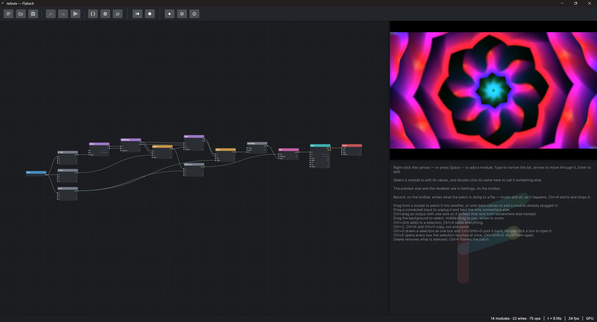
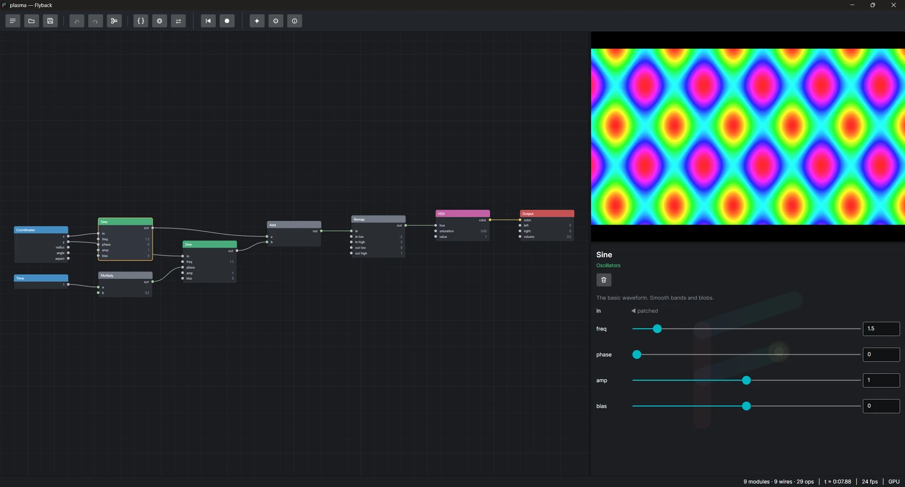
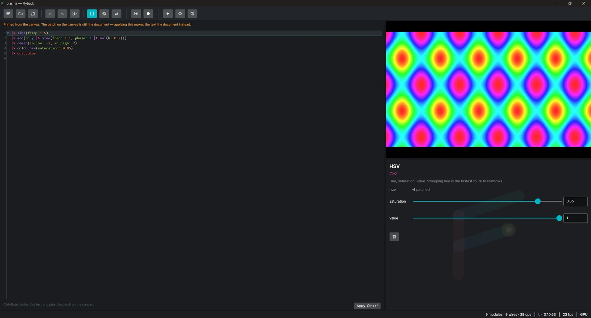
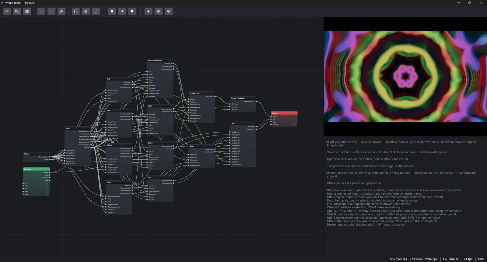
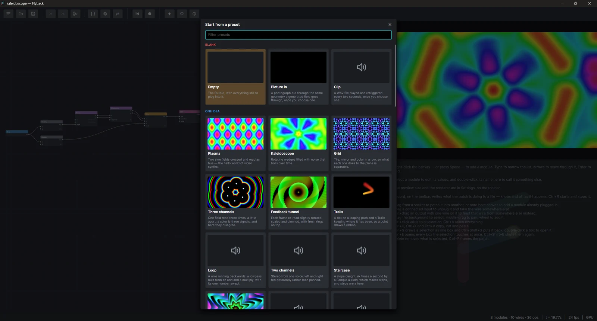

A 303 line with accents and slides, through a four-pole filter into two delays, over a galloping bass. The first minute of a hundred and twenty-eight bars: the intro, a build, and the first drop.
A patchable synthesizer for Windows, macOS and Linux
One patch.
A picture and a sound.
Flyback is a modular synthesizer where the same graph of modules draws on the screen and plays through the speakers. Wire oscillators, patterns, geometry and feedback together, and watch and hear the result change as you turn a knob.
Releases are built for Windows x64, macOS on Apple silicon and Linux x64. MIT licensed.

How it works
A graph you draw, compiled to a program that runs twice.
Every module declares its sockets, and every wire says where a signal goes. When the patch changes, Flyback compiles the graph backwards from the Output into one flat list of instructions. The screen runs that list once per pixel, and the speakers run it once per sample.
# The same patch, as text.
let slowly = t * 0.2
x |> sine(freq: 1.5)
|> add(y |> sine(freq: 1.1, phase: slowly))
|> remap(-2..2, 0..1)
|> color.hsv(saturation: 0.85, value: 1)
|> out.colorPicture and sound share one patch
Wire a signal into the Output's color and you see it. Wire it into left and
you hear it. A slow oscillator can set the hue of the image and the tremolo on the tone at the same time.
Sockets have sensible defaults
Position inputs are already connected to Coordinates and time inputs to Time, so an oscillator starts oscillating as soon as you place it, before you draw a single wire.
Every edit recompiles, live
The preview draws on the GPU where it can, and the sound keeps playing while you patch. A toolbar button swaps the preview and the canvas for a bigger picture. Undo takes back any edit, including a whole patch the assistant built.
Gallery
What the presets look like.
Flyback ships with more than forty presets, from single ideas to whole tracks. These clips were
rendered with flyback-cli render, and the stills were captured from the running app.
What they sound like
The first minute of two presets, rendered to WAV with flyback-cli render and
encoded to MP3. Nothing was added: every note, drum and echo comes out of the patch.
A generative patch with no clock in it: four random voltages read out of noise choose the notes and open the voices, and five wires run backwards, so a drone bends its own phase, an echo darkens every time round, and the voices push each other down.
Whole tracks, seen and heard
Mycelium, from the Effects plugin, recorded from the running app for one pass of its ninety-six bars. One sequencer arranges the six sections, the picture is driven by the signals that drive the sound, and one of the voices is the picture being read back as a waveform.
Fracture, from the same plugin, is drum and bass at a hundred and seventy. The break is synthesized rather than sampled and then chopped anyway, by bending the clock it reads, and the picture is cut into eight strips by the same list that cuts the drums.
Bronze is a gamelan: sixteen gong cycles on a tempo that crawls at the opening gong, runs through the middle and crawls home. Every part is thinned or figured out of one melody in a five-note scale, and the mandala has a ring for each tier of the orchestra.
Phase is phase music after Steve Reich: two players on one twelve-note pattern, the second pulling ahead a note at a time until it has been through every canon and is back in unison. The picture is the diagram of it, one dial of notes turning inside the other.
Whole band is the one built into the engine, so it has no filter, no reverb and no noise module to reach for and builds all three: a Mix fed its own output is a lowpass, two Adds that feed themselves are a filter that rings, and six Strings nobody plucks are the room. Seven parts, twelve phrases of eight bars, and a picture every part moves.
More tracks go up on the Flyback channel on YouTube.
Features
Everything is a module, and every module is a few sockets.
Right-click the canvas or press Space to add a module where you are pointing. Drag from a socket to wire it, drag a wire off to unplug it, and group modules into boxes.
Sources, oscillators, patterns, forms, geometry, color, maths, pitch, timing, shaping, time effects, feedback and measurement modules, with a preset for each family.
Read the previous frame back in, or wire a module into itself. A loop is a delay: a filter or a comb for the ears, a trail or a tunnel for the eyes.
Press F2 and the patch is text you can edit, diff and generate. It
builds back to exactly the same program and saves as .fbks.
MIDI input on Windows, macOS and Linux, with polyphonic voices. With no controller, the computer keyboard is the instrument. Knobs follow a MIDI controller too.
Record a live take, knobs and all, with Ctrl+R.
For exact, repeatable exports use flyback-cli render. MP4, WebM, MOV, MP3, M4A and FLAC
where ffmpeg is installed; AVI and WAV are written by Flyback itself and need nothing.
Describe a patch and have one built, over any chat-completions endpoint or Gemini, whose models can listen to the patch themselves. What comes back is an edit you can undo.
Modules, presets, sound backends and assistants all load from a folder. The Picture, Voice, Effects and Mastering modules ship as plugins themselves. Write your own.
A look around
Screenshots from the app.
Edit a module on the inspector
Select a module to see its description and a slider for every socket that is not wired. A wired socket reads patched. Values change the running patch as you drag.

Switch to text with F2
The code view prints the patch in the language, in the same colors the canvas uses for each kind of module. Edit it and press Ctrl+Enter to build it back into a patch.

Keep big patches readable with groups
The Whole band preset is two hundred and twenty-five modules in fifteen boxes: a clock, the song, seven instruments, a room, a mixing desk and the picture. Double-click a box to open it, and press Ctrl+G to make your own.

Start from a preset
The first toolbar button opens a gallery of every preset: a tile for each, with a frame of what
it draws (or a speaker for one that is only heard), its name and a line saying what it shows,
under a heading for each kind: the blank canvas and the two presets that wait on a file of yours,
then the patches about one idea, then the ones where sound and picture
are the same thought, then the showcases. Presets that plugins add appear under those same headings,
after the built-in ones, and presets of your own come last, under YOUR PRESETS: its first tile saves the patch
on the canvas as one, with the sounds and pictures it uses, into a presets folder beside
Flyback’s settings. Right-click one of yours to delete it. Type to narrow the gallery to the presets whose name or heading has what you typed, as in the module list: the arrows move through what is left and Enter starts from it. Rest the pointer on a tile for a second to try it: its picture plays on
the tile, its sound fades in, and the patch you have fades out until you move on. Click a tile to start from it. Settings → Graphics picks which one Flyback
opens on the next time it starts.

Get started
Download it, or run it from source.
From a release
Each release has a self-contained folder per
platform, with the app, the command line tool and the plugins side by side. There is nothing to install:
unpack it and run Flyback.
After that it keeps itself up to date: a new release is downloaded in the background and installed the next time Flyback starts, and only if it is signed with Flyback's release key. The window that opens then shows what changed since the version it replaced. Turn it off under Settings → Updates.
It also counts how it is used: the version, the operating system, which of its own plugins loaded and which sound backend opened, roughly how many cores, how much memory and how tall a screen the machine has, how many of each kind of module are in a patch when it plays, whether an assistant was asked and which provider, and when a run ends, roughly how long it lasted, what it did and how fast the picture was drawn. If Flyback crashes, it sends the kind of error and where in Flyback it happened, never the message. Every figure is sent as a coarse band. No patch, nothing typed, and nothing that identifies you or your machine — two runs cannot be told apart from one. Turn it off under Settings → Usage.
On macOS the build is Flyback.app, and it opens .fbk, .fbkb and
.fbks files by double-click.
From source
You need the .NET 10 SDK. A build from source can also target Windows on Arm (win-arm64)
and Intel Macs (osx-x64), which the releases do not include.
git clone https://github.com/markovcd/Flyback
cd Flyback
dotnet run --project src/Flyback.App -c ReleaseFrom the command line
flyback-cli render nebula.fbk -o nebula.png --size 1920x1080 --at 2.5
flyback-cli render drone.fbk -o drone.mp4 --seconds 30 --fps 30
flyback-cli check nebula.fbk --strict
flyback-cli print nebula.fbk -o nebula.fbks